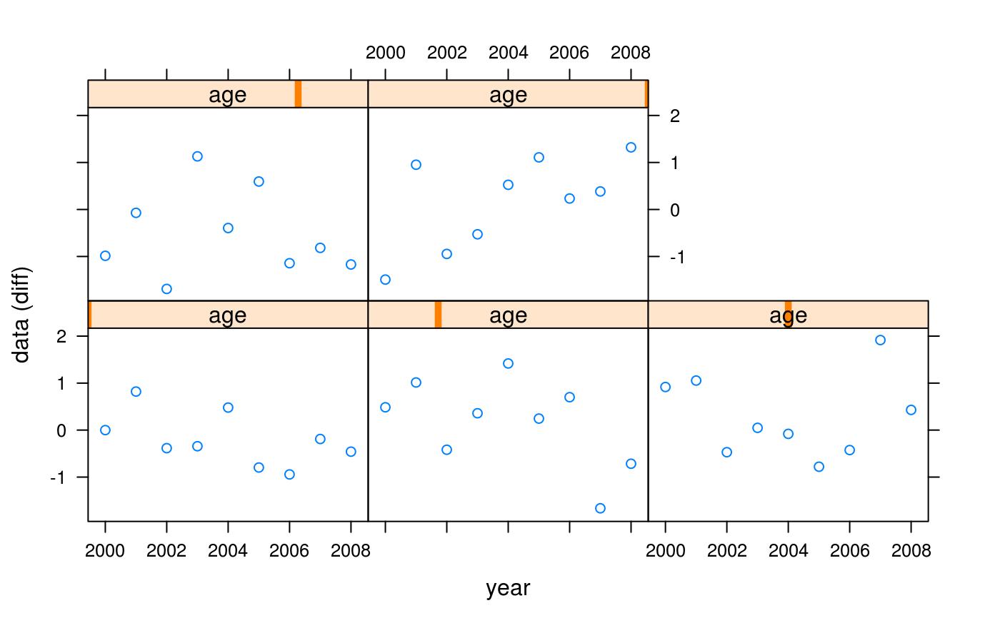

The FLQuant class is a six-dimensional array
designed to store most quantitative data used in fisheries and population
modelling.
FLQuant(object, ...) # S4 method for missing FLQuant( object, dim = rep(1, 6), dimnames = "missing", quant = NULL, units = "NA", iter = 1 ) # S4 method for vector FLQuant( object, dim = rep(1, 6), dimnames = "missing", quant = NULL, units = "NA", iter = 1, fill.iter = TRUE ) # S4 method for array FLQuant( object, dim = rep(1, 6), dimnames = "missing", quant = NULL, units = "NA", iter = 1, fill.iter = TRUE ) # S4 method for matrix FLQuant(object, dim = lapply(dimnames, length), dimnames = "missing", ...) # S4 method for FLQuant FLQuant( object, quant = attributes(object)[["quant"]], units = attributes(object)[["units"]], dimnames = attributes(object)[["dimnames"]], iter = dim(object)[6], fill.iter = TRUE, dim = attributes(object)[["dim"]] )
| object | Input numeric object |
|---|---|
| ... | Additional arguments |
| dim | Vector of dimension lengths |
| dimnames | List of dimension names |
| quant | Character vector for name of first dimension |
| units | Character vctor of units of measurement, see uom |
| iter | Number of iterations, i.e. length of the 6th dimension |
| fill.iter | Should iterations be filled with the same content as the first? |
The six dimensions are named. The name of the first dimension can be
altered by the user from its default, quant. This could typically be
age or length for data related to natural populations. The
only name not accepted is 'cohort', as data structured along cohort should
be stored using the FLCohort class instead. Other dimensions
are always names as follows: year, for the calendar year of the
datapoint; unit, for any kind of division of the population, e.g. by
sex; season, for any temporal strata shorter than year; area,
for any kind of spatial stratification; and iter, for replicates
obtained through bootstrap, simulation or Bayesian analysis.
In addition, FLQuant objects contain a units attribute, of
class character, intended to contain the units of
measurement relevant to the data.
Array must have 6 dimensions
Array must be of class numeric
Dimensions 2 to 6 must be named "year", "unit", "season", "area" and "iter"
The FLQuant method provides a flexible constructor for objects of the class.
Inputs can be of class:
vector:A numeric vector will be placed along the year dimension by default.
matrix:A matrix will be placed along dimensions 1 and 2, unless otherwise specified by 'dim'. The matrix dimnames will be used unless overriden by 'dimnames'.
As above
If no input is given, an empty FLQuant (NA) is returned, but dimensions and dimnames can still be specified.
Additional arguments to the constructor:
The units of measurement, a character string.
The dimensions of the object, a numeric vector of length 6.
A list object providing the dimnames of the array. Only those different from the default ones need to be specified.
The name of the first dimension, if different from 'quant', as a character string.
FLQuant
The FLR Team
# creating a new FLQuant flq <- FLQuant() flq <- FLQuant(1:10, dim=c(2,5)) summary(flq) #> An object of class "FLQuant" with: #> dim : 2 5 1 1 1 1 #> quant: quant #> units: NA #> #> Min : 1 #> 1st Qu.: 3.25 #> Mean : 5.5 #> Median : 5.5 #> 3rd Qu.: 7.75 #> Max : 10 #> NAs : 0 % # Vectors are used column first... dim(FLQuant(1:10)) #> [1] 1 10 1 1 1 1 # ...while matrices go row first. dim(FLQuant(matrix(1:10))) #> [1] 10 1 1 1 1 1 FLQuant(matrix(rnorm(100), ncol=20)) #> An object of class "FLQuant" #> , , unit = unique, season = all, area = unique #> #> year #> quant 1 2 3 4 5 6 7 #> 1 0.671420 1.250601 -1.574575 -1.653281 -0.386304 -2.377515 -0.205677 #> 2 1.230022 -1.876237 -0.196319 -2.761868 -0.242499 -0.065409 0.234881 #> 3 1.645468 -0.368788 0.915060 0.264369 0.220593 -0.469705 0.110628 #> 4 -0.182926 -2.129297 1.078637 1.024572 -1.481090 -0.280516 0.274202 #> 5 -1.379258 0.337646 1.452803 -0.659186 0.724691 0.574837 1.574920 #> year #> quant 8 9 10 11 12 13 14 #> 1 0.567768 -0.579388 -0.420207 1.138668 -0.096206 0.427619 -0.395441 #> 2 -0.059612 0.942199 -0.255375 0.190523 0.694509 -0.566479 -0.130702 #> 3 -0.149588 -0.706361 -0.369238 -1.366394 -0.474591 -0.833835 -1.999494 #> 4 0.266169 -1.275402 1.212448 -1.298103 1.763131 0.398259 -0.995931 #> 5 0.528403 0.733260 -0.445363 -2.137098 2.025846 -1.474538 0.420114 #> year #> quant 15 16 17 18 19 20 #> 1 -0.062862 -0.780270 1.513670 -0.610945 -0.144902 -0.094504 #> 2 -0.080132 -1.776959 0.033989 1.251884 -0.324447 0.032556 #> 3 -0.032283 -0.427835 0.740793 0.250319 -0.172565 0.461290 #> 4 -0.718981 -2.031027 -1.270808 -1.705582 -1.236063 1.381400 #> 5 -1.116561 2.750765 -0.163564 -0.855413 -1.902304 -0.416476 #> #> units: NA FLQuant(array(rnorm(100), dim=c(5,2,1,1,1,10))) #> An object of class "FLQuant" #> iters: 10 #> #> , , unit = unique, season = all, area = unique #> #> year #> quant 1 2 #> 1 -0.25995(1.298) 0.34655(0.434) #> 2 -0.46356(0.383) -0.57083(1.013) #> 3 -0.22391(1.044) -0.61925(0.631) #> 4 -0.51552(0.419) -0.46943(0.615) #> 5 -0.23508(0.617) 0.39845(0.978) #> #> units: NA FLQuant(array(rnorm(100), dim=c(5,2)), iter=10) #> An object of class "FLQuant" #> iters: 10 #> #> , , unit = unique, season = all, area = unique #> #> year #> quant 1 2 #> 1 0.696270(0) -0.830808(0) #> 2 2.008870(0) 1.402474(0) #> 3 -0.056978(0) -0.723869(0) #> 4 0.240416(0) 1.330580(0) #> 5 -0.021890(0) -0.811333(0) #> #> units: NA # working with FLQuant objects flq <- FLQuant(rnorm(200), dimnames=list(age=1:5, year=2000:2008), units='diff') summary(flq) #> An object of class "FLQuant" with: #> dim : 5 9 1 1 1 1 #> quant: age #> units: diff #> #> Min : -1.69018 #> 1st Qu.: -0.715704 #> Mean : -0.02313333 #> Median : -0.08009077 #> 3rd Qu.: 0.5949239 #> Max : 1.915691 #> NAs : 0 % flq[1,] #> An object of class "FLQuant" #> , , unit = unique, season = all, area = unique #> #> year #> age 2000 2001 2002 2003 2004 2005 2006 2007 #> 1 -0.27494 0.81959 -0.38404 -0.34301 0.47958 -0.79594 -0.94297 -0.18924 #> year #> age 2008 #> 1 -0.45863 #> #> units: diff flq[,1] #> An object of class "FLQuant" #> , , unit = unique, season = all, area = unique #> #> year #> age 2000 #> 1 -0.27494 #> 2 0.48545 #> 3 0.91698 #> 4 -0.98534 #> 5 -1.49119 #> #> units: diff flq[1,1] <- 0 units(flq) #> [1] "diff" quant(flq) #> [1] "age" plot(flq)  FLQuant() #> An object of class "FLQuant" #> , , unit = unique, season = all, area = unique #> #> year #> quant 1 #> all NA #> #> units: NA summary(FLQuant()) #> An object of class "FLQuant" with: #> dim : 1 1 1 1 1 1 #> quant: quant #> units: NA #> #> Min : NA #> 1st Qu.: NA #> Mean : NA #> Median : NA #> 3rd Qu.: NA #> Max : NA #> NAs : 100 % FLQuant(1:10) #> An object of class "FLQuant" #> , , unit = unique, season = all, area = unique #> #> year #> quant 1 2 3 4 5 6 7 8 9 10 #> all 1 2 3 4 5 6 7 8 9 10 #> #> units: NA FLQuant(array(rnorm(9), dim=c(3,3,3))) #> An object of class "FLQuant" #> , , unit = 1, season = all, area = unique #> #> year #> quant 1 2 3 #> 1 0.971396 0.225973 0.334415 #> 2 -0.579663 -0.514857 -0.093491 #> 3 1.604180 -0.823788 0.304062 #> #> , , unit = 2, season = all, area = unique #> #> year #> quant 1 2 3 #> 1 0.971396 0.225973 0.334415 #> 2 -0.579663 -0.514857 -0.093491 #> 3 1.604180 -0.823788 0.304062 #> #> , , unit = 3, season = all, area = unique #> #> year #> quant 1 2 3 #> 1 0.971396 0.225973 0.334415 #> 2 -0.579663 -0.514857 -0.093491 #> 3 1.604180 -0.823788 0.304062 #> #> units: NA FLQuant(matrix(rnorm(12), nrow=4, ncol=3)) #> An object of class "FLQuant" #> , , unit = unique, season = all, area = unique #> #> year #> quant 1 2 3 #> 1 -0.476508 0.093501 -0.583969 #> 2 -0.241312 -0.366949 -0.193450 #> 3 0.824156 -0.129409 -0.269547 #> 4 -1.555644 0.407796 0.073658 #> #> units: NA FLQuant(FLQuant(array(rnorm(9), dim=c(3,3,3)), units='kg'), units='t') #> An object of class "FLQuant" #> , , unit = 1, season = all, area = unique #> #> year #> quant 1 2 3 #> 1 0.357236 -1.609575 0.176436 #> 2 0.550428 -1.049710 1.128307 #> 3 0.038402 2.052034 0.435002 #> #> , , unit = 2, season = all, area = unique #> #> year #> quant 1 2 3 #> 1 0.357236 -1.609575 0.176436 #> 2 0.550428 -1.049710 1.128307 #> 3 0.038402 2.052034 0.435002 #> #> , , unit = 3, season = all, area = unique #> #> year #> quant 1 2 3 #> 1 0.357236 -1.609575 0.176436 #> 2 0.550428 -1.049710 1.128307 #> 3 0.038402 2.052034 0.435002 #> #> units: t